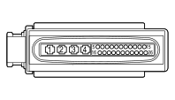

M050 ABS CONTROL UNIT (FRONT)
- Path
- Electrical equipment > 3 CONNECTORS > M INTERMITTENT AND TIMED ELECTRONIC DEVICES > M050 ABS CONTROL UNIT > M050 ABS CONTROL UNIT (FRONT)
- Kind
- connector pinout (pin -> wire colour -> other end)
- Applies to
- engines: 2.0 16V JTD, 2.2 16V JTD; all production periods; only with equipment: Automatic Transmission and MY 2005
- Interactive page
- https://sloeber94.github.io/elrnDB-fUlss/en/#/179010731
Applies to: engines: 2.0 16V JTD, 2.2 16V JTD; all production periods; only with equipment: Automatic Transmission and MY 2005

Wiring | Colour |
|---|---|
NERO (black) |
Pin | Cable | Destination | |||
|---|---|---|---|---|---|
Sec.. | Colour | Node | Connect. | Pin | |
1 | 4 | GV - M702C | 1 | ||
2 | 4 | BM02A | 2 | ||
3 | 2,5 | BM03A | 3 | ||
4 | 2,5 | GV - M702D | 1 | ||
5 | 0,5 | 7001A | 2 | ||
6 | 0,5 | 7022A | 1 | ||
8 | 0,5 | 7032A | 1 | ||
9 | 0,5 | 7012A | 1 | ||
10 | 0,5 | 7011A | 2 | ||
11 | 0,5 | 9006U | 6 | ||
14 | 0,5 | 9001P | X | 29 | |
15 | 0,5 | 9001U | 4 | ||
16 | 0,5 | 7002A | 1 | ||
17 | 0,5 | 7021A | 2 | ||
18 | 0,75 | C702A | 3 | ||
19 | 0,5 | 7031A | 2 | ||
20 | 0,5 | 210F | X | 4 | |
9 | |||||
2 | |||||
21 | 0,5 | 442A | 1 | ||
25 | 0,5 | 9000P | X | 30 | |
26 | 0,5 | 9000U | 2 | ||
Topics linked from this page (16)
- 12 FRONT
- B001D ENGINE COMPARTMENT JUNCTION UNIT (FRONT)
- B001F ENGINE COMPARTMENT JUNCTION UNIT (FRONT)
- C012A ABS FRONT EARTH (FRONT)
- C012B ABS FRONT EARTH (FRONT)
- D001 FRONT/DASHBOARD COUPLING
- D006 FRONT/REAR COUPLING
- I030 BRAKE PEDAL SWITCH
- K025 BRAKE FLUID LEVEL SENSOR (SWITCH)
- K070 LEFT FRONT WHEEL SENSOR FOR ABS
- K071 RIGHT FRONT WHEEL SENSOR FOR ABS
- K075 LEFT REAR WHEEL SENSOR FOR ABS
- K076 RIGHT REAR WHEEL SENSOR FOR ABS
- M001B BODY COMPUTER (FRONT)
- M001E BODY COMPUTER (FRONT)
- M055 AUTOMATIC TRANSMISSION CONTROL UNIT